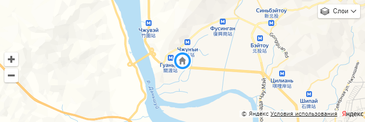

Тюменский некоммерческий фонд сертификации
Орган по сертификации: № RA.RU.10АБ33 от 21.01 2016 Орган по сертификации промышленной продукции "Тюменский некоммерческий фонд сертификации". Россия, 625026, Тюменская обл. г. Тюмень, ул. Одесская, 52а. Тел/факс (3452) 32-01-46, 32-00-69, 20-07-43, web: www.tnfs.ru; E-mail: tnfs@list.ru
